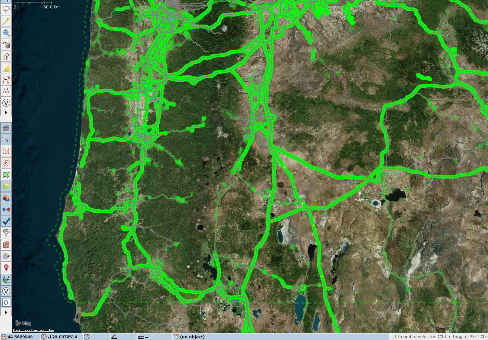
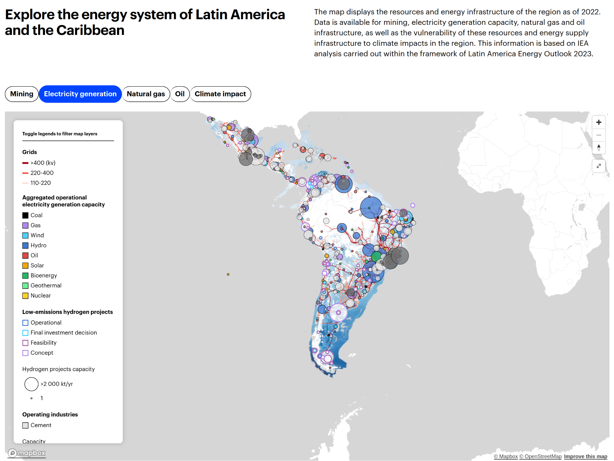
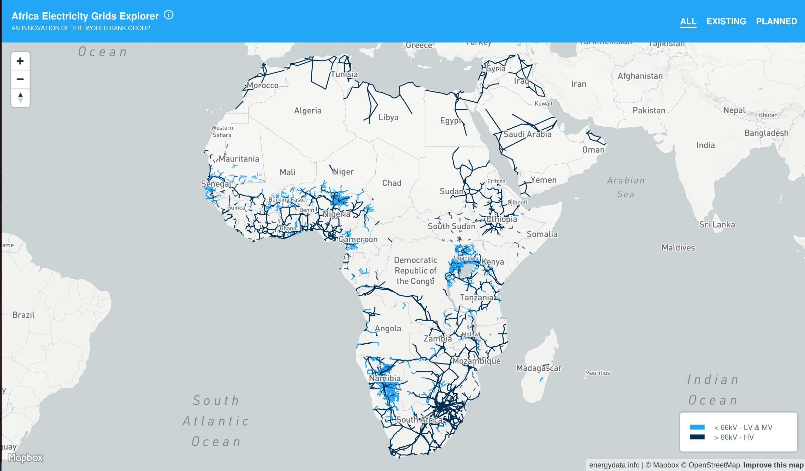
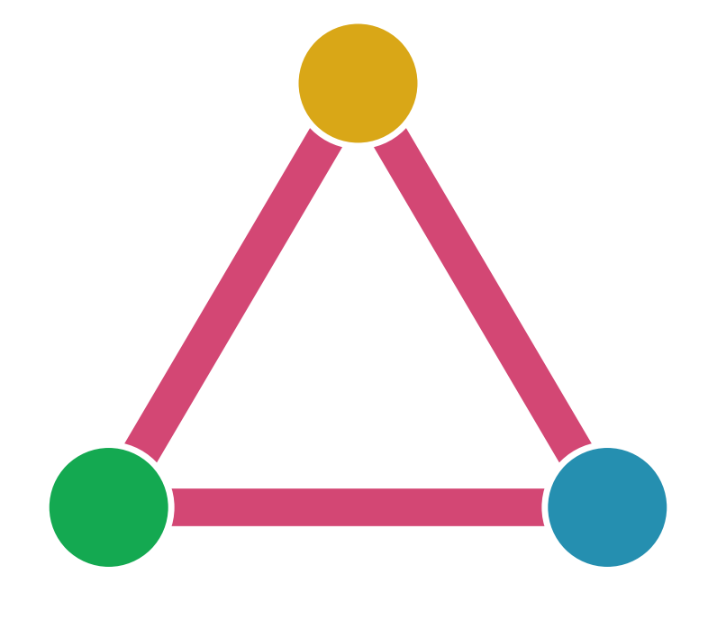
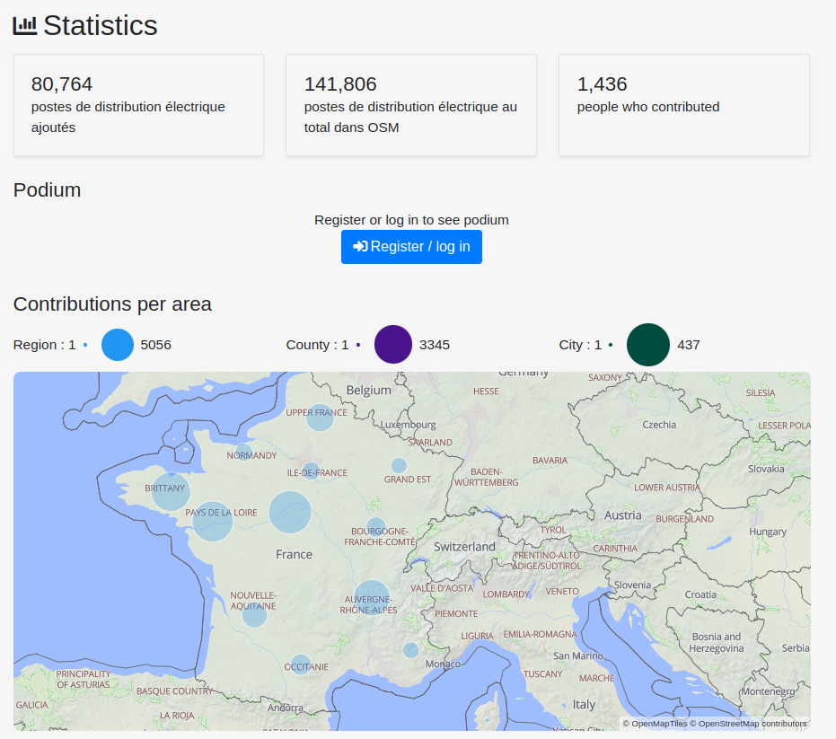
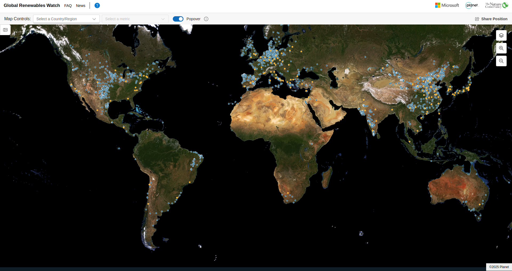
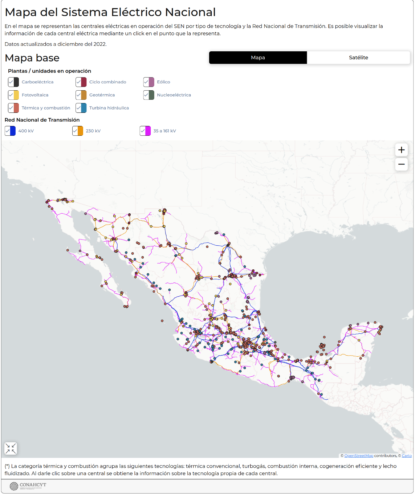
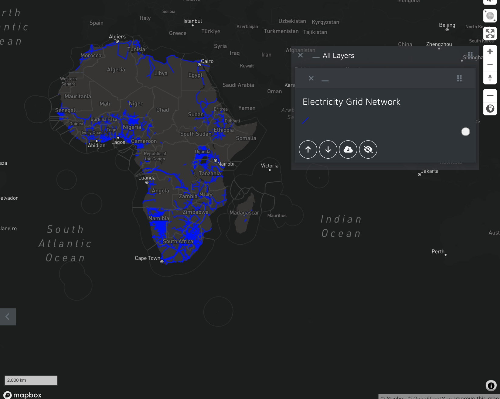

Impact of Open Electrical Grid Data
How and why is it used?
When you map towers, substations, powerplants in OpenStreetMap (OSM), you are essentially adding valuable data that is used by many different entities.
🔵 OpenStreetMap electrical grid data is used by academia, institutions, local authorities and private organisations all around the world.
Energy modelling and planning simulations use this data, to comprehensively inform policy and investment decision-making. From evaluating different energy scenarios, analysing different technologies and policies, to providing insights to achieve full electrification in developing countries, energy modelling tools are key to decarbonise the world's energy sector, as well as meeting development goals. However, these modelling results rely heavily on what goes in and this is: data.
Good quality and up-to-date data are crucial to be able to accurately plan and invest in power infrastructure. Therefore, improving on the current state of the OpenStreetMap grid significantly increases the quality of these activities. For example, PyPSA Earth (an open-source global cross-sectoral energy system model), uses OpenStreetMap grid data to build the electricity network in its framework.
 OpenStreetMap data is used by larger Organizations like the WorldBank or International Energy Agency as this dataset is the only source for regional and continental energy studies. Availability of data on public infrastructure in an open way through OpenStreetMap creates significant societal value for energy planning, security and clean energy transitions, as well as economic value for companies. A global challenge in the ongoing clean energy transitions is the growth and modernization of the transmission grid. The International Energy Agency (IEA) records on the necessity of grid information and data to tackle this challenge:
OpenStreetMap data is used by larger Organizations like the WorldBank or International Energy Agency as this dataset is the only source for regional and continental energy studies. Availability of data on public infrastructure in an open way through OpenStreetMap creates significant societal value for energy planning, security and clean energy transitions, as well as economic value for companies. A global challenge in the ongoing clean energy transitions is the growth and modernization of the transmission grid. The International Energy Agency (IEA) records on the necessity of grid information and data to tackle this challenge:
IEA key policy recommendation: “Improve data reliability and availability to better assess and manage risks for clean energy projects in emerging markets and developing economies.” How to implement the COP28 energy goals
Availability of reliable data has therefore a direct impact on the adoption of clean energy projects. Clean energy projects around the globe are being currently pushed for three key reasons:
- Mitigate climate change as fossil fuels are responsible for 70 % of the greenhouse gas emissions,
- Strengthen resilience and increasing energy security against extreme weather events and mitigate the impacts of climate change,
- Increasing energy security by reducing energy dependency on imports from states perceived as unreliable or hostile.
 Furthermore, our team also ran an "impact analysis" to see how many times the keywords OpenStreetMap AND power related keywords (eg. power grid, electrical grid, renewable, energy model, etc...) were used together in google scholar.
Furthermore, our team also ran an "impact analysis" to see how many times the keywords OpenStreetMap AND power related keywords (eg. power grid, electrical grid, renewable, energy model, etc...) were used together in google scholar.
- 📈 10,700 publications since 2005 included a combination of these keywords.
- 🚀 7,520 publications (70% of total) were published in the last 5 years alone, which shows the increasingly important role OpenStreetMap power data is having in academia.
Why is it important that this data is open?
🟧 Firstly, many developing countries' data is outdated, incomplete or scattered, which makes it harder for governments and utilities to plan grid and power developments. Although developed countries tend to have better quality network data, it can be often difficult to access as it is not always open or easily usable due to licensing. This also reduces transparency and makes it harder to cross-check results and collaborate, since data needs to be collected and re-collected often.
🟦 Moreover, transparency of strategies, and thus of the data used, is essential for the public to accept infrastructure expansions and investments. (Ciupuliga & Cuppen, 2013). Open-data can empower local governments, communities and NGO's to participate in energy planning, as well as improve and fix the data as OpenStreetMap is open. A good example of how mapping the grid has helped empower local communities, is YouthMappers' initiative in Sierra Leone. Their power grid mapping project enabled information about electricity infrastructure to be reliable and easily accessible, which helps local electricity agencies plan and reduces their costs (see this paper). Additionally, power infrastructure such as generation plants, transmission networks, substations, and distribution networks data are also important to evaluate the connectivity potential of isolated communities to the wider grid (Arderne et al.2020). Thus, mapping power infrastructure and having this data open, doesn't only help with energy planning for decarbonisation and clean energy, but also for electrification which is crucial for innovation, health, education and women's empowerment.
Quote
Open data is crucial for innovation that will accelerate the energy system to Net Zero (Catapult Energy Systems)
🟨 Indeed, for developing countries and emerging economies the expansion of the electricity grid plays a central role in granting access to electrification and clean energy. Electrification has been shown to be a key in reducing poverty and increasing economic stability. Access to clean energy, especially for cooking, has been a priority for improving public health especially among women and children. Delaying the expansion of electrical and renewable energy sources in these emerging regions creates risks entrenching fossil fuel dependency for decades, as seen in developed countries.
In particular, the scaling of this infrastructure in low to medium income countries has been hindered because of poor data quality and data governance on the state of the electrical grid. One reason for the low data quality is the obscurity of this data due to security concerns similar to security through obscurity practices in software development. This is why OpenStreetMap is so widely used in these areas. Another reasons for the lack of OpenStreetMap grid data in low- to medium-income countries is the poor quality and outdated nature of the satellite imagery provided by ESRI and Microsoft.
🟫 For many developed countries, high-quality open data is published by companies or agencies outside of OpenStreetMap. For example ENTSO-E publishes the Transmission System Map containing geo-information on transmission infrastructure across Europe. The French operator of the transmission grid RTE publishes its grid topology including 5-minute resolution time-series.

For the United States, agencies including the Department of Homeland Security publish and regularly update a dataset containing transmission grid information to support agencies, emergency response and economic development, with the publication of electronic geospatial dataset dating back to legislation in the 1990s. In comparison with OpenStreetMap data, the Homeland Infrastructure Foundation-Level Data shows the high similarity between the two datasets.
Who uses OpenStreetMap grid data?
How does mapping have an impact? When you map towers, substations, powerplants in OpenStreetMap (OSM), you are essentially adding valuable data that is used by many different entities. This data has been used by the following list of organisations, which is not exhaustive.
Info
Data such as the Africa Electricity Grids Explorer by the World Bank are often used by other organisations and communities, so the impact of OpenStreetMap data goes even further indirectly!
International Energy Agency
Latin America Energy Outlook Interactive Map

World Bank 
Africa Electricity Grids Explorer

PyPSA-Earth + PyPSA-Eur

PyPSA Earth and Europe use OpenStreetMap data for energy system studies all around the world.

Enedis
The French utility company Enedis, operating the electricity distribution network, mapped power poles and substations with the help of a strong local OpenStreetMap community.

Global Renewables Watch 
The Global Renewables Watch maps and measures renewable energy installations and their estimated capacities at the subnational, national, and global levels. The machine learning behind the detection process is mainly trained using OpenStreetMap data.

CONAHCYT (Gobierno de Mexico) 
Mapa del Sistema Eléctrico Nacional

European Commission - Joint Research Centre
Africa Knowledge Platform

More Information - The electricity network data on the image is a mix of World Bank and OpenStreetMap data
IRENA 
Global Atlas for Renewable Energy

Global Wind Atlas
Global Wind Atlas

Fraunhofer ISE
Energy Charts